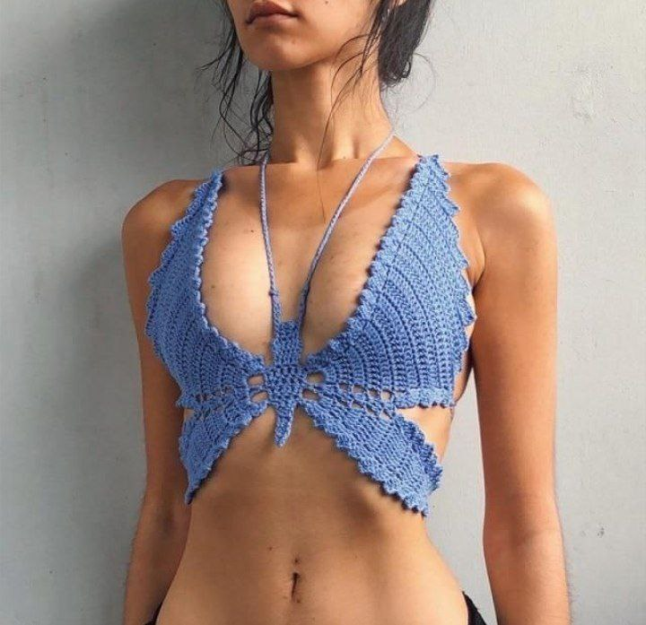
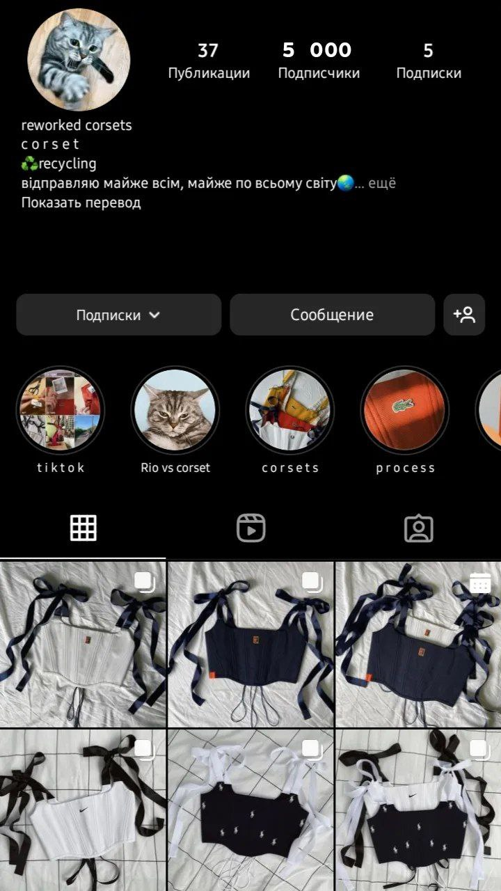
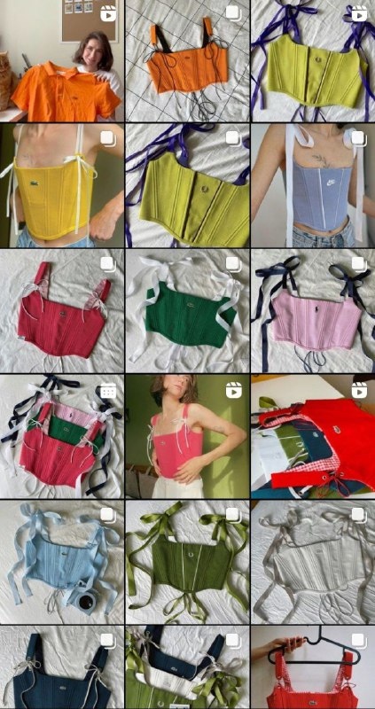

Моя бізнес-ідея
Мене звати Оля та я дуже люблю робити щось своїми руками. Я з дитинства шила, вишивала, вязала, щось ліпила, робила прикраси з бісеру і так далі.. Приблизно півтори року назад у Pinterest я знайшла один просто офігезний топ (для хлопців: Топ - це ніби бюстгалтер, але є дуже велике АЛЕ в топі дівчина може ходити по вулиці), і мої очі горіли ніби вогнище на Івана Купала. Це був вязаний топ у вигляді метелика. Я дивилася, зберігала картинки та мріяла, що колись зроблю і собі такий. Варіант, як виглядає топ-метелик, дивитись нижче )
Чому я це називаю бізнес-ідеєю ?
Почну ще з першої ідеї, котра почалася ще в кінці минулої осені. Моя ціль була підготуватися до літа 2022 та підкорити Україну цією красою! Я передивилася увесь інтернет в пошуках схеми для цього клятого метелика, і зрозуміла, що ні в Україні, ні в інших сусідніх країнах його немає. Під тим що її не має, я маю на увазі що НІХТО про цього метелика не вкурсі. Я розуміючи що це буде величезне відкриття, розповідаю про це хлопцеві. Та завдяки його підтримці, я вирішила ризикнути та спробувати для початку його зв'язати.
Слідуючим важливим етапом було знайти схему. Після години пошуку вже на американському ютубі, я знаходжу одне єдине відео як його зв'язати.
Тут яб могла прикріпити силку на це відео, але я не буду, та прикріплю силку на дядю Гугла, як казала моя вчителька фізики зі школи. Кому треба дядя Гугл тут.
Наступним в край важливим етапом було обрати пряжу для топу. Це важливо оскільки топ прилягає до тіла, він має бути приємним до шкіри, має пропускати повітря, трохи тянутися.
Види пряжі серед яких я мала обрати :
-
Акрил
- Еластичний акрил
- Дитячий акрил
-
Бавовна
- Стрічкова
- Смесовка
- Скручена
- Меланжева
- Котон
Матеріали
Далі я пішла та закупилась обов'язковими матеріалами для виготовлення свого виробу.
- Ножиці
- Крючок
- Декілька мотків різних кольорів пряжі
Сідаю, в'яжу її десь три чотири дні по 5годин. І що Ви думаєте? Вона не така, ну як така, але є купа помилок, я давай вязати іншу вже по свойому метелику, та по ходу виправляючи помилки. І ще одна але не така, і ще треття в дві нитки - вийшла дуже грубою та жорсткою. Я сдалася, та вирішила зробити перерву. Звязавши ще одну унікальну (розповім про неї згодом).
Війна
Почалась повномаштабна війна. Та мені взагалі було не до цього. Я хвилювалася за свою бабусю. Я ходила плела сітки. Потім волонтерила для діток.
Відновлення моєї бізнес-ідеї завдяки цьому аккаунту!
Я наткнулася на ось цю дівчинку в Instagramm. Вона шиє корсети та має купу котів :)
 Я неймовірно надихнулася її аккаунтом, та згадала про свої топи-метелики. Розглядаючи її аккаунт зрозуміла декілька дуже крутих нюансів особисто для себе! Я їх пишу щоб зафіксувати це маленьке відкриття та можливо ще комусь буде це корисним:
- Для неї корсети це її хоббі. Тобто вона ходить на роботу, а у вільнй від робити час шиє корсети для свого задоволення.
- Вона не бере під замовлення, тобто зробила новий корсет - виклала його на сторінку.
-
Вона продає корсети двома способами:
- Аукціон - ставе фіксовану ціну, та кожен крок це 100грн, до прикладу на три години. І все корсет отримує та - чия ставка була останьою.
- Фіксована ціна - ставе ціну, корсет купують, вона відправляє і все.
Доречі, я з нею поспілкувалася у дірект, та вона дуже приємна дівчинка!
Мої плани
Зараз я хочу підготувати на кінець осені, зиму та ще на морозну весну свїх метеликів. Ви скажете: стоп! погодь, чому метелики були для літа, а тут раптом осінь-зима-весна ? Та тому що коли я готувалася до літа 2022 було вже холодно і я чомусь купила ще теплу пряжу, і коли "літні мотки" закінчилися я чомусь зробила одного унікального теплого метелика.
Я спробую пов'язати ще декілька метеликів у вільний час, запустити рекламу, для того щоб про мене хочаб хтось знав. Та можливо з другого разу щось вийде.
Натхнення мені та Вам робити круті та цікаві сайти!
Тут я пробую ще span
якийсь рядковий текст та ось ще щосьа тепер ми спробували ще рядковий текст перекинути на нову строку